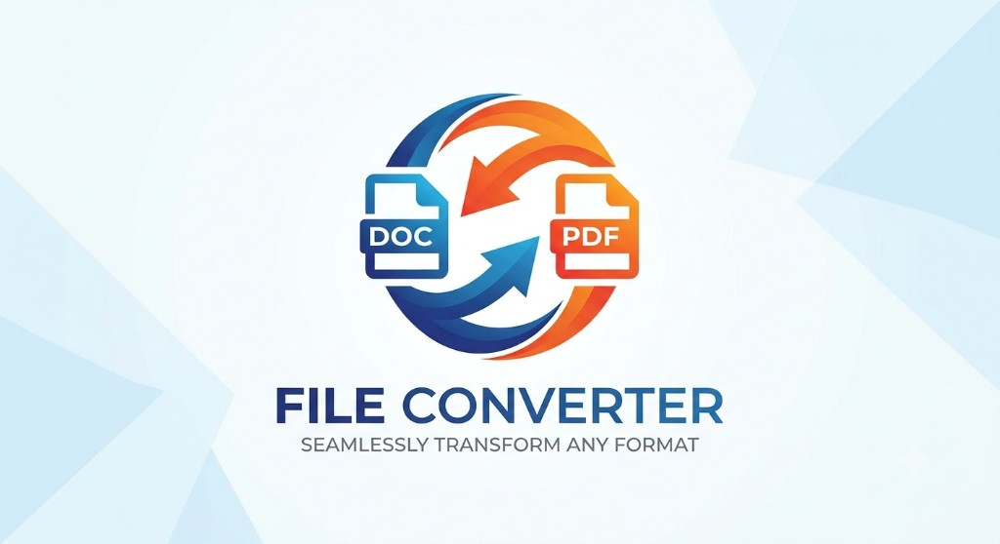

Files ConverterLegal & Security
🔐 Security and data protection
Files Converter is built to protect your documents at every stage. We use strong security controls, encrypted transfers, and strict access policies to keep your data safe.
📋 Data privacy and security
Understand how we collect, process, secure, and remove your files and account data.
General privacy policy
We only process the information necessary to run conversions and provide account features. Your uploaded files are handled securely and removed automatically after the retention window.
Data subject rights & transparency
We provide clear information on data handling and support requests related to access, correction, deletion, and processing controls according to applicable privacy laws.
Data ownership & user control
You remain the owner of your files. Files Converter does not claim ownership of uploaded content and provides mechanisms to delete or revoke access where supported.
Data retention & removal
Uploads are kept for a maximum of 2 hours for processing and download. After that, files are permanently purged. You can also manually delete files after conversion.
GDPR compliance
Our processing follows data minimization, purpose limitation, and accountability. We respect user consent and provide data export/deletion features where applicable.
✅ Certifications & compliance
Security, privacy, and trust are central to our architecture and operational standards.
ISO-aligned controls
Our internal controls are designed to reflect globally recognized information security and governance practices for risk reduction and service reliability.
GDPR-ready privacy model
We align data handling with GDPR principles such as data minimization, purpose limitation, and accountability in processing activities.
eIDAS-aware signature workflows
For document signing scenarios, our process design supports traceability, integrity, and auditable event records in modern electronic workflows.
SOC2-type controls
We maintain internal controls consistent with trust principles: security, availability, and confidentiality of customer data.
Regular third-party audits
We undergo independent assessments to validate our security posture and compliance with privacy frameworks.
🛡️ Product security
Core technical controls that protect your documents and account activity.
Cloud infrastructure safeguards
Workloads run with hardened service configurations, environment isolation, and monitored runtime controls.
Encrypted network communications
Traffic between clients and services uses encrypted channels (TLS 1.2+) to prevent interception and tampering.
Secure software lifecycle
We apply secure coding, dependency monitoring, and release controls to reduce software risk.
Password storage
Passwords are never stored in plain text. We use secure hashing and appropriate salting practices (bcrypt/Argon2).
Data privacy & retention
Uploads are retained for a limited period to support download workflows, then removed automatically. Additional deletion controls provided where applicable.
Backup policies
Backups are encrypted and managed with controlled access to support resilience and disaster recovery. Old backups are deleted securely.
Availability & incident response
We monitor system health and apply incident handling procedures to maintain service continuity and rapid remediation.
API security controls
APIs use authentication tokens, rate limiting, and input validation to prevent abuse and injection attacks.
Vulnerability management
Regular scanning, dependency patching, and coordinated disclosure program to address potential weaknesses.
End-to-end encryption for uploads
Files are encrypted during transit and at rest using industry-standard algorithms. Encryption keys are managed with strict isolation.
🏢 Internal security
Security operations, access discipline, and governance practices used by our team.
Controlled account management
Access is granted by role, reviewed periodically, and removed when no longer required.
Password management standards
Internal users follow strong authentication and credential hygiene requirements including unique passphrases.
Two-factor authentication
Privileged and sensitive systems require extra authentication factors to reduce account compromise risk.
Physical access controls
Operational environments use controlled physical security practices and access restrictions for data centers.
Onboarding & offboarding checks
Access is provisioned and revoked through documented workflows to keep permissions accurate.
Least privilege principle
Users and services receive only the minimum permissions needed to perform their responsibilities.
Security awareness training
All team members complete annual privacy and security training to maintain a strong human firewall.
Incident response plan
We have a documented IR plan with designated roles, communication protocols, and post-mortem analysis.
Logging & monitoring
Comprehensive audit logs and real-time alerting for suspicious activities, unauthorized access attempts.
Third-party risk management
All vendors and subprocessors are screened for security posture and sign data protection agreements.
🔒 Your rights & commitments
Right to deletion
You can request permanent deletion of your account and associated metadata. Processed files auto-expire and are purged.
Data portability
Upon request, we provide export of your personal data in a machine-readable format.
Breach notification
In case of personal data breach, we will notify affected users and authorities within required timeframes.
Subprocessor transparency
We maintain a list of subprocessors (cloud providers, analytics) and update users on changes.
Secure deletion certification
File shredding uses cryptographic erasure and overwrite methods to ensure data unrecoverable after expiry.
🔒 Every card contains a detailed dropdown — click on any title to expand the security explanation. All data handling aligns with modern privacy standards.